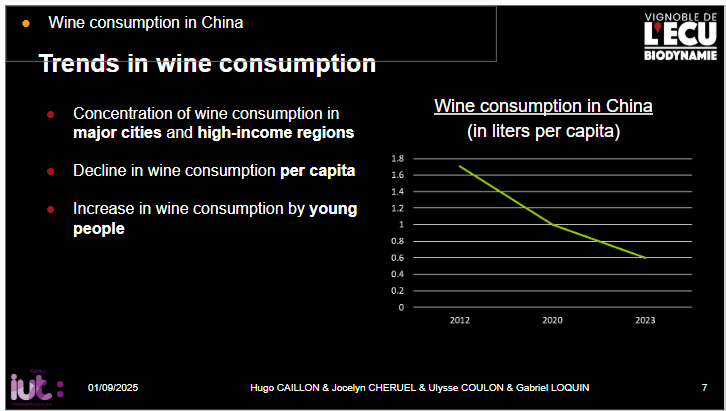

Compétence valoriser
Valoriser une production dans un contexte professionnel
AC13.01 : Prendre connaissance des biais rencontrés dans la mise en place d'une enquête
Lors de la SAE-206, nous avons réalisé un projet de fiche patient pour l'AP-HP, plus précisément pour le projet ComPaRe. Il est basé sur des patients qui répondent à un questionnaire, puis des calculs sont faits pour les situer
par rapport au reste des personnes qui souffrent de la même maladie.
Dans cette fiche, on affiche des curseurs, affichant des moyennes. Cependant, il faut faire attention à ce que certains chiffre ne soient pas biaisés.
Extrait de la fiche patient
Par exemple, ci-dessus, on constate un diagramme circulaire montrant une répartition des sexes. Il faut faire attention à ce que certaines répartitions ne soient pas biaisées, c'est-à-dire qu'une partie ne soit pas surreprésentée alors qu'elle ne devrait pas l'être.AC13.06 : Mesurer l'importance d'une expression précise et nuancée dans la communication en français et dans une langue étrangère des résultats
La section ci-dessous comprend cet apprentissage également.
AC13.02 : Identifier l'importance de contextualiser ses données
Pendant la SAE-105, nous avons réalisé une étude sur le muscadet et réfléchi sur sa potentielle vente en Chine. Une étude de marché a été faite, et nous en avons tiré des conclusions.
Cependant, avant de les tirer, il a fallu tout recontextualiser.

Extrait de la présentation de la SAE-104-105
Par exemple, ici, nous avons étudié les tendances de consommation de vin en Chine, et nous avons vu que d'apparence, elle pouvait baisser, mais qu'en réalité les jeunes aimaient beaucoup en boire.AC13.05 : Comprendre l'intérêt de la data visualisation et de l'infographie
Durant cette même SAE, nous avons réalisé plusieurs graphiques permettant au jury de bien visualiser l'intérêt de vendre du vin en Chine.
Extrait de la présentation de la SAE-104-105
Ici, le graphique présente l'explosion du marché des fruits de mer en Chine. Le diagramme en barre permet de bien comprendre que la Chine représente un tiers (soit une majeure partie) du marché. Nous avons mis ceci en lien avec le muscadet, avec qui les fruits de mer sont habituellement mis ensemble.Il était essentiel de créer une visualisation de données pour que le jury comprenne qu'il y a une réelle opportunité.